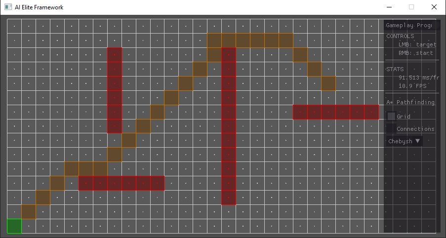
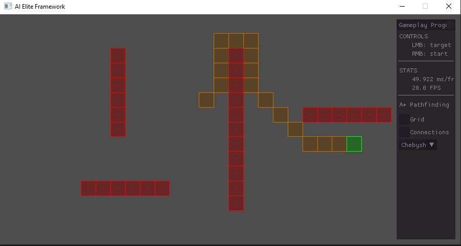
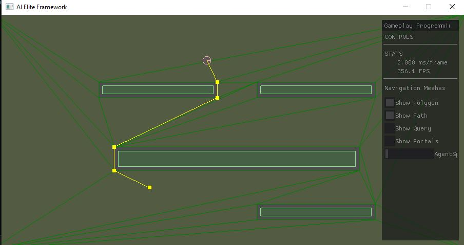
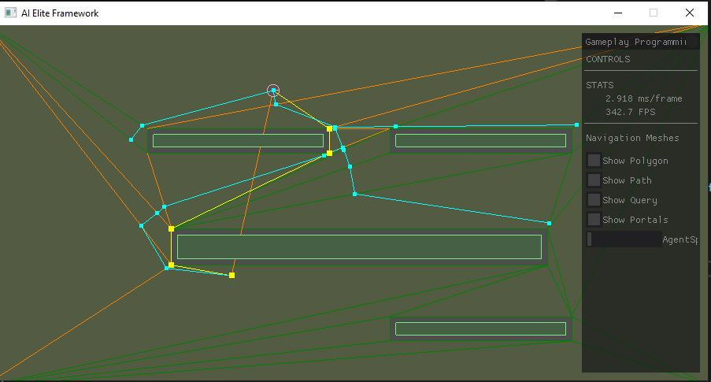

A* Pathfinding /
Navigation Mesh
Intro
This project was made for the gameplay programming course. During this course we learned a lot about AI with topics such as steering behaviours, flow fields, Space partitioning and pathfinding. The framework for this project was provide to us by the school.
A* pathfinding
To tackle the problem of finding the optimal path between an agent and his desired position while also taking in account any potential obstacles we looked into several algorithms. After learning about algorithms such as Dijkstra's algorithma and breadth-first search we were asked to implement the A* pathfinding algorithm
 Navigation meshes
After succesfully implementing the A*Pathfinding algorithm the next step was to implement navigation meshes.
 